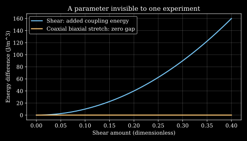

4. Myocardial deformation, anisotropy and active stress
A tissue model fits every measured biaxial stretching curve exactly. That still need not determine its response to shear. The experiment may never have excited the part of the energy that controls shear coupling. More measurements along the same deformation family cannot reveal a parameter to which every one of those measurements is blind.
We will reconstruct a myocardial slab's deformation, assign material directions, and compare two passive energies that agree on all coaxial biaxial tests but disagree in a shear test. This recurring example connects the lecture's geometry, tissue symmetry and testing protocol to a concrete question: what has the experiment actually identified? We then separate membrane resultants, residual stress and active contraction from the passive solid fit.
Geometry supplies a domain, not a constitutive law L6 · 00:48 L8 · 01:11
The lecture idealizes the left ventricle as a thick-walled truncated ellipsoid, with the right ventricle represented by a crescent-like surrounding region. Such a domain can support a mechanical calculation without claiming to reproduce every anatomical detail. A chosen axis ratio, wall-thickness ratio or crescent extent belongs to the adopted geometry; it is not a universal constant of all human hearts.
A prolate spheroidal coordinate convention makes the ellipsoidal structure explicit. Let $d\gt0$ be a focal length, $u\gt0$ a dimensionless radial coordinate, $v\in[0,\pi]$ a polar angle and $\phi\in[0,2\pi)$ an azimuth. Set
\[x_1=d\cosh u\cos v,\quad x_2=d\sinh u\sin v\cos\phi,\quad x_3=d\sinh u\sin v\sin\phi.\]At fixed $u$, substituting into the following expression gives one:
\[\frac{x_1^2}{d^2\cosh^2u}+\frac{x_2^2+x_3^2}{d^2\sinh^2u}=1.\]The long and short semiaxes are $A=d\cosh u$ and $B=d\sinh u$, with $A^2-B^2=d^2$. The identity uses $\cosh^2u-\sinh^2u=1$. Replacing the hyperbolic functions by cosine and sine would describe a different coordinate map. Nested constant-$u$ surfaces are confocal ellipsoids; their physical separation is not generally one constant wall thickness. Truncating the domain also changes its volume relative to the complete ellipsoid.
For a deliberately simpler full ellipsoidal shell, volume is $V_w=(4\pi/3)(A_oB_o^2-A_iB_i^2)$. Outer semiaxes50 and30 mm and inner semiaxes45 and25 mm give70.6858 mL of wall. At an illustrative density1.05 g/mL, mass is74.2201 g. This is the mass of that specified shell, not the predicted mass of a whole human heart with atria, vessels and a different geometry.
The lecture also introduces allometry. A dimensionally transparent version is $m_h=m_*(M/M_*)^\alpha$, where body mass $M$ is compared with reference mass $M_*$, and $m_*$ is a fitted organ mass. The Stahl1965 primary record describes organ/body-mass power relations across mammals. Constant grams of heart per kilogram of body follows only when $\alpha=1$ within the relevant fit. A cross-species empirical relation and a person's measured anatomy answer different questions; a heavier person need not be represented by a uniformly magnified copy of the same heart.
Material symmetry is a transformation statement L6 · 04:59 L8 · 04:11
Isotropy means that rotating material directions relative to a prescribed deformation does not change the constitutive response. Transverse isotropy retains one preferred material axis but requires rotational symmetry throughout the plane perpendicular to it. Merely finding the same modulus along two selected directions is insufficient to establish all those symmetries. Orthotropy has three mutually orthogonal material symmetry directions/planes and permits distinct responses associated with them. It is more specific than the statement that properties differ in three arbitrary directions.
At a material point, define orthonormal reference directions $\mathbf f_0,\mathbf s_0,\mathbf n_0$ for fibre, sheet and sheet-normal organization. A spatially varying fibre field might be $\mathbf f_0(X_3)=\cos\theta(X_3)\mathbf e_1+\sin\theta(X_3)\mathbf e_2$. Its changing angle describes structural variation through the wall. Heterogeneity concerns variation with position; anisotropy concerns dependence on direction at one position. A homogeneous anisotropic slab and a heterogeneous isotropic slab are both possible mathematical materials.
The Humphrey–Yin1987 primary abstract reports a nearly transversely isotropic local approximation for particular passive cardiac experiments and strain histories. The Holzapfel–Ogden2009 paper develops a structure-based orthotropic description that includes sheet-related response. Those are modeling statements tied to tissue structure and tested deformations, rather than consequences of seeing one visible fibre direction.
Stacking layers with different preferred directions does not, by itself, prove that the resulting effective material is orthotropic. For example, a balanced pair at angles $+\theta$ and $-\theta$, with equal weights and symmetric geometry, can cancel contributions odd under an in-plane reflection. Unequal layer weights need not cancel them. The orientation distribution, weights and other structure determine the effective symmetry. A changing fibre angle and an asserted symmetry class therefore require separate evidence.
For our running slab take $\mathbf f_0=\mathbf e_1$ and $\mathbf s_0=\mathbf e_2$. Relevant dimensionless invariants are $I_1=\operatorname{tr}\mathbf C$,$I_{4f}=\mathbf f_0\cdot\mathbf C\mathbf f_0$,$I_{4s}=\mathbf s_0\cdot\mathbf C\mathbf s_0$, and $I_{8fs}=\mathbf f_0\cdot\mathbf C\mathbf s_0$. Fibre stretch is $\lambda_f=\sqrt{I_{4f}}$. The last invariant measures the dot product of deformed reference unit fibre and sheet vectors; it is zero when those deformed vectors remain perpendicular.
Unloaded tissue need not be stress-free L6 · 11:14 L8 · 14:58
Near-incompressibility means the material's volume changes little under the conditions modeled. In a small-strain isotropic comparison, a bulk modulus $K$ much larger than shear modulus $\mu$ makes volumetric strain small relative to typical distortional strains. Under uniform compressive pressure $p$, the linearized estimate is $\Delta V/V\simeq-p/K$. With illustrative $K=10\,\mathrm{MPa}$ and $p=10\,\mathrm{kPa}$, its magnitude is0.001. This does not establish a universal ratio for every perfused myocardial specimen.
The unperfused-tissue approximation suppresses complications from changing vascular blood content. Unperfused means blood is not being driven through the tissue; it is an experimental state, not a definition that the organism must be dead. Perfused tissue can exchange and redistribute fluid, and the scale and timescale of the experiment matter. We impose $J=1$ in the slab model below as an explicit constitutive/kinematic approximation.
Residual stress remains after external loads have been removed. Imagine two bonded elastic strips with different stress-free lengths. Their common unloaded length can leave one in tension and the other in compression, with equal and opposite resultant forces. Cutting or separating them releases deformation even though the composite had no net applied force. Internal equilibrium does not require every local stress to vanish.
The Omens–Fung1990 study measured deformation after radial cuts in arrested rat ventricular rings, using markers and image coordinates. Its primary abstract explicitly distinguishes unloaded and released configurations. This supports residual-strain evidence in the studied preparation, not a universal numerical human residual-stress profile. A small additional deformation after another cut is evidence about that release protocol; it is not a general proof that every three-dimensional stress component has vanished.
Consequently, selecting an imaged unloaded configuration as $\mathbf F=\mathbf I$ does not establish $\boldsymbol\sigma=0$ there. A model must account for residual stress through a suitable reference construction, initial-stress formulation or other explicitly consistent approach. Fitting a stress-free hyperelastic energy to data measured from a residually stressed reference can absorb the mismatch into parameters and then fail under another loading path.
Recover the complete in-plane map before imposing incompressibility L6 · 14:04 L8 · 17:28
During filling, a wall region may stretch tangentially while thinning; during contraction, tangential shortening can accompany thickening. Shear and nonuniform deformation can occur as well. A local test should therefore not infer thickness change from two axial entries while ignoring measured shear.
The lecture's affine slab map is
\[x_1=\lambda_1X_1+\kappa_1X_2,\quad x_2=\kappa_2X_1+\lambda_2X_2,\quad x_3=\lambda_3X_3.\]Its dimensionless deformation gradient is $\mathbf F=\begin{pmatrix}\lambda_1&\kappa_1&0\\\kappa_2&\lambda_2&0\\0&0&\lambda_3\end{pmatrix}$. Direct expansion gives $J=(\lambda_1\lambda_2-\kappa_1\kappa_2)\lambda_3$. Under incompressibility,
\[\lambda_3=\frac{1}{\lambda_1\lambda_2-\kappa_1\kappa_2},\qquad\lambda_1\lambda_2-\kappa_1\kappa_2\gt0.\]The positivity condition prevents an orientation-reversing or singular in-plane map when thickness remains positive. With $\lambda_1=1.2$,$\lambda_2=1.1$,$\kappa_1=0.3$ and $\kappa_2=0.2$, the in-plane determinant is1.26 and thickness ratio $\lambda_3=0.793651$. Ignoring shear gives $1/1.32=0.757576$ and an actual $J=1.26/1.32=0.954545$ for the sheared map, contradicting the imposed volume constraint.
When shear is present, the diagonal coefficients $\lambda_1,\lambda_2$ are not automatically principal stretches. A line initially along $\mathbf e_1$ maps to $(\lambda_1,\kappa_2,0)$ and has stretch $\sqrt{\lambda_1^2+\kappa_2^2}$. Principal stretches require the eigenvalues of $\mathbf C$ as in chapter2. Reporting only two grip displacements can miss this distinction.
Marker coordinates can estimate an affine in-plane map: for reference differences collected in a matrix $\mathbf X$ and current differences in $\mathbf x$, solve $\mathbf x\approx\mathbf F_{2D}\mathbf X$ by an appropriately conditioned least-squares calculation. At least two independent reference directions are needed, and a wider marker set permits residual checks. Collinear markers cannot identify a general two-dimensional map. Non-affine residuals may indicate actual spatial heterogeneity, edge effects or measurement error; one should not automatically force them to zero.
The measured boundary force must also be converted to a specified stress or resultant with consistent reference/current areas. A uniformly loaded grip does not prove that the strain is uniform everywhere in the specimen. Geometry, boundary traction and material anisotropy interact, particularly near grips and corners.
A passive energy stores work; it does not reproduce arbitrary hysteresis L6 · 15:39 L8 · 20:55
For the smooth incompressible passive solid, let $W(\mathbf C,\mathbf f_0,\mathbf s_0)$ be energy per reference volume. Its stress is $\boldsymbol\sigma=-p\mathbf I+2\mathbf F W_{\mathbf C}\mathbf F^T$. The multiplier $p$ comes from the constraint and boundary conditions. Material directions are specified in the reference state and mapped consistently; their presence does not violate observer objectivity.
For this incompressible hyperelastic solid, the full nominal stress includes the constraint multiplier: $\mathbf P=\partial W/\partial\mathbf F-pJ\mathbf F^{-T}$. Along an admissible increment, $dJ=J\mathbf F^{-T}:d\mathbf F=0$, so the multiplier contributes $-p\,dJ=0$ to the work and $\mathbf P:d\mathbf F=dW$. Around a closed quasistatic path that returns every state variable to its initial value, $\oint\mathbf P:d\mathbf F=\oint dW=0$. An observed loading/unloading loop with nonzero area therefore requires dissipation, an evolving internal state, separate protocol-specific pseudoelastic branches, or another mechanism beyond that single reversible energy. Calling the curve nonlinear does not by itself account for hysteresis.
The source deliberately approximates a more complex tissue response by nonlinear elasticity. That can be useful for a limited passive protocol, provided the sacrificed rate/history information is kept visible. It does not establish that perfusion is the only origin of viscoelastic behavior, or that one fitted energy remains accurate at every rate, activation state and loading history.
For an original toy orthotropic material, take positive coefficients $\mu,k_f,k_s$ in Pa and define
\[W_1=\frac{\mu}{2}(I_1-3)+\frac{k_f}{2}(I_{4f}-1)^2+\frac{k_s}{2}(I_{4s}-1)^2.\]Now add a coupling coefficient $k_{fs}\ge0$:
\[W_2=W_1+\frac{k_{fs}}{2}I_{8fs}^2.\]These energies are objective because their invariants use $\mathbf C$ and reference directions. They are deliberately simple and are not fitted myocardium laws: for example, the squared fibre terms resist both extension and compression, without a separate tension-only recruitment rule. At $\mathbf F=\mathbf I$, the anisotropic derivatives vanish; the isotropic pressure multiplier can enforce a zero-traction reference.
A perfect biaxial fit can leave a shear parameter completely unknown L6 · 19:53 L8 · 23:17
Consider every coaxial incompressible biaxial deformation $\mathbf F_b=\operatorname{diag}(\lambda_f,\lambda_s,(\lambda_f\lambda_s)^{-1})$, with positive stretches. Then $\mathbf C_b$ is diagonal in our material directions, so $I_{8fs}=C_{12}=0$. Consequently $W_2-W_1=0$ for every stretch pair, however large the dataset.
Equality of energies along a curve alone would not prove equality of all stress components; derivatives transverse to that curve could differ. Here the stronger statement follows directly from the added term:
\[d(W_2-W_1)=k_{fs}I_{8fs}\,dI_{8fs}=0\quad\hbox{when }I_{8fs}=0.\]Its full first derivative vanishes at those states. The added elastic stress is therefore zero there as well. With the other coefficients and boundary conditions fixed, all these biaxial tests have identical predictions for every $k_{fs}\ge0$. Their response sensitivity to that parameter is zero. Reducing force noise, adding more stretch ratios, or fitting the same tests with a more flexible optimizer does not remove this exact blindness.
Now perform simple shear $\mathbf F_\gamma=\mathbf I+\gamma\mathbf e_1\otimes\mathbf e_2$. It has $J=1$ and $I_{8fs}=\gamma$. Thus
\[\Delta W=\frac{k_{fs}}2\gamma^2,\qquad\frac{d\Delta W}{d\gamma}=k_{fs}\gamma.\]The latter is the added nominal shear response along this imposed path. It also equals the added Cauchy shear component here: the deformed fibre vector is $\mathbf e_1$, the deformed sheet vector $\gamma\mathbf e_1+\mathbf e_2$, and the coupling stress has off-diagonal component $\Delta\sigma_{12}=k_{fs}\gamma$. An isotropic pressure adjustment cannot remove a shear component.
For the original coefficients $\mu=1000$,$k_f=2000$,$k_s=1500$ and $k_{fs}=2000$ Pa, at $\gamma=0.2$ the energy difference is40 J/m³ and the shear-traction difference400 Pa. The two candidates that were indistinguishable in every coaxial biaxial test now predict different measured forces. A shear experiment supplies a new direction of information, rather than merely another point on the old family.

Holzapfel–Ogden's primary paper examines the value of different loading modes for directional passive-tissue modeling. Our two-polynomial-energy proof is a separate teaching construction, not a reconstruction of its fitted parameter set. The earlier Humphrey–Yin abstract also reports that parameters inferred from one type of specimen/loading did not generally transfer unchanged to multiaxial specimens. A good calibration must state its tested deformation domain.
This issue survives a change of inference algorithm. Yin and colleagues'2023 generative constitutive-modeling paper proposes learning families of biomechanical relationships with generative learning and Bayesian inference; its abstract describes murine-aorta applications. We use that methodological context only. In our exact counterexample, data whose likelihood is independent of $k_{fs}$ cannot update an independent prior for it. A neural model can import a prior or constraint, but cannot make an unexcited observable carry information it does not contain. Experiment design and honest uncertainty remain part of model discovery.
Membrane force per length differs from three-dimensional stress L6 · 28:08 L8 · 32:14
The lecture treats thin endocardial, epicardial and pericardial specimens with membrane descriptions. A three-dimensional stress has units N/m²; integrating a suitable in-plane stress through thickness produces a membrane resultant in N/m. A transducer force divided by specimen width likewise gives a force per length, with the reference/current width convention stated. It is not a bulk stress until the appropriate thickness and configuration have been supplied.
The Kang–Humphrey–Yin1996 primary abstract concerns paired excised bovine endocardial and epicardial membranes. It reports greater endocardial stiffness at low strain in that preparation and different polynomial/exponential fit complexity, with species differences also noted. That supports tissue-specific constitutive calibration. It does not turn the plotted stretch near1.5 into a universal safe limit, a tissue-failure threshold or a fixed property of every human layer.
To see the unit and differentiation issues without borrowing fitted coefficients, prescribe a constrained one-parameter membrane path with axial stretch $\lambda\gt0$. Define scalar Green strain $E=(\lambda^2-1)/2$ and a surface energy per reference area
\[W_s=c_0(e^Q-1),\qquad Q=\frac a2 E^2,\qquad c_0\gt0,\ a\gt0.\]Here $c_0$ is in N/m and $a$ is dimensionless. The energy derivative conjugate to the chosen stretch is the nominal membrane resultant
\[P_s=\frac{dW_s}{d\lambda}=c_0e^Q a E\lambda.\]The factor $\lambda$ comes from $dE/d\lambda=\lambda$; differentiating as if $E$ were engineering strain would lose it. At $c_0=2$ N/m,$a=10$ and $\lambda=1.5$, the result is132.200373 N/m. An independent finite-difference energy derivative checks it in the program. This constrained path is an illustrative surface energy, not the complete biaxial layer model or a pressure test.
In a general two-dimensional description, the energy depends on all retained surface strain components and any material directions. A reduction from a three-dimensional incompressible material also needs thickness behavior and out-of-plane traction conditions. A two-dimensional drawing does not, by itself, eliminate those mechanical requirements.
Active contraction requires a source beyond a passive energy
The passive tests above characterize noncontracting tissue. They do not supply the active force that drives the pressure–volume cycle. To expose that missing object, add the deliberately minimal constitutive extension
\[\boldsymbol\sigma=\boldsymbol\sigma_{pass}+T_a\,\mathbf f\otimes\mathbf f,\qquad\mathbf f=\frac{\mathbf F\mathbf f_0}{|\mathbf F\mathbf f_0|}.\]The current unit fibre vector $\mathbf f$ is dimensionless, and prescribed active tension $T_a$ is in Pa. It can depend on time, activation and stretch in a fuller model. Under an observer rotation, $\mathbf f^*=\mathbf Q\mathbf f$; therefore the active tensor transforms as $\mathbf Q(T_a\mathbf f\otimes\mathbf f)\mathbf Q^T$ when $T_a$ is an objective scalar. Adding anisotropic active stress need not violate frame indifference.
Hold a simple bar at its neutral stretch and choose lateral conditions so its passive stress vanishes. Turning on $T_a=5000$ Pa along its axis generates tensile reaction force $T_aA=0.05$ N at current area10 mm², even though the stretch has not changed. A passive law that is only a fixed function of the present $\mathbf C$ cannot produce two different responses at the same $\mathbf C$ without another state/input. If the bar is released, force balance permits it to shorten instead of retaining that reaction.
This is a conceptual extension, not a calibrated cardiomyocyte or excitation–contraction model. It does not describe calcium dynamics, activation propagation, force–velocity behavior, length-dependent activation or ATP expenditure. An energy accounting of active work must include chemical energy and dissipation; simply adding a time-varying force to a passive energy does not establish a closed thermodynamic model.
Execute deformation and identification checks
The standalone NumPy program evaluates the stipulated shell geometry, complete sheared biaxial map, two candidate energies, shear-traction gap, membrane derivative and constrained active reaction. It explicitly checks several different mechanisms. Its numbers are illustrative rather than patient measurements, and it performs no file or network operations.
"""Original geometry, deformation and experiment-identifiability checks."""
from math import pi, exp, isclose
import numpy as np
outer, inner = (50.,30.), (45.,25.) # long/short semiaxes in mm
wall_ml = 4*pi/3*(outer[0]*outer[1]**2-inner[0]*inner[1]**2)/1000
print(f"Illustrative full ellipsoidal wall: {wall_ml:.6f} mL")
print(f"Mass at 1.05 g/mL: {1.05*wall_ml:.6f} g")
f = np.array([[1.2,.3,0.],[.2,1.1,0.],[0.,0.,1/(1.2*1.1-.3*.2)]])
assert isclose(np.linalg.det(f),1.)
print(f"Sheared biaxial thickness ratio: {f[2,2]:.6f}; J: {np.linalg.det(f):.6f}")
def energy(deformation,coupling):
c = deformation.T @ deformation
return (1000*(np.trace(c)-3)/2+2000*(c[0,0]-1)**2/2
+1500*(c[1,1]-1)**2/2+coupling*c[0,1]**2/2)
for l1,l2 in [(1.,1.),(1.1,1.2),(1.2,1.1),(1.3,1.05)]:
diagonal=np.diag([l1,l2,1/(l1*l2)])
assert isclose(energy(diagonal,0.),energy(diagonal,2000.))
def shear(g):
return np.array([[1.,g,0.],[0.,1.,0.],[0.,0.,1.]])
def gap(g):
return energy(shear(g),2000.)-energy(shear(g),0.)
gamma,delta=.2,1e-6
shear_stress=(gap(gamma+delta)-gap(gamma-delta))/(2*delta)
assert isclose(gap(gamma),2000*gamma**2/2)
assert isclose(shear_stress,2000*gamma,rel_tol=1e-8)
print(f"Biaxially invisible parameter: shear energy gap {gap(gamma):.6f} J/m3")
print(f"Shear traction gap: {shear_stress:.6f} Pa")
def membrane(lam):
e=(lam**2-1)/2
return 2*(exp(10*e**2/2)-1) # energy/reference area, N/m
lam=1.5;e=(lam**2-1)/2
resultant=2*exp(10*e**2/2)*10*e*lam
fd=(membrane(lam+delta)-membrane(lam-delta))/(2*delta)
assert isclose(resultant,fd,rel_tol=1e-8)
print(f"Illustrative membrane nominal resultant: {resultant:.6f} N/m")
active_tension, area=5000.,10e-6
print(f"Constrained active bar reaction: {active_tension*area:.6f} N")
print("Geometry, incompressibility, energy-derivative and identifiability checks passed")
Illustrative full ellipsoidal wall: 70.685835 mL Mass at 1.05 g/mL: 74.220126 g Sheared biaxial thickness ratio: 0.793651; J: 1.000000 Biaxially invisible parameter: shear energy gap 40.000000 J/m3 Shear traction gap: 400.000000 Pa Illustrative membrane nominal resultant: 132.200373 N/m Constrained active bar reaction: 0.050000 N Geometry, incompressibility, energy-derivative and identifiability checks passed
Problems and fully worked solutions
1. A coordinate surface. Verify that a constant-$u$ prolate coordinate surface is an ellipsoid. Why is $u$ not a polar angle, and why does choosing two constant-$u$ surfaces not imply constant physical thickness?
Solution
Substitution gives $x_1^2/(d^2\cosh^2u)=\cos^2v$ and $(x_2^2+x_3^2)/(d^2\sinh^2u)=\sin^2v$, whose sum is1. The semiaxes involve hyperbolic functions and satisfy $A^2-B^2=d^2$; changing $u$ changes both semiaxes, whereas $v$ moves along one surface. Two confocal surfaces are not parallel surfaces at constant normal distance. At different positions their gradients and local metric factors differ, so wall separation must be calculated geometrically.
2. Units of allometry. In $m_h=m_*(M/M_*)^\alpha$, what is the mass ratio for doubled body mass? When would fixed grams of organ per kilogram of body be consistent with the formula?
Solution
The ratio is $2^\alpha$, independent of units because the argument $M/M_*$ is dimensionless. The organ/body ratio is proportional to $M^{\alpha-1}$, so it is constant only for $\alpha=1$. For a fitted exponent different from1, using one fixed grams-per-kilogram value across all sizes changes the model. Neither the exponent nor prefactor is supplied by dimensional consistency alone; they require an empirical fit and a specified population.
3. Shear changes the thickness constraint. With diagonal coefficients1.2 and1.1 and shear coefficients0.3 and0.2, compute the incompressible thickness ratio. Quantify the volume error if the shear product is ignored.
Solution
The in-plane determinant is $1.2(1.1)-0.3(0.2)=1.26$. Thus $\lambda_3=1/1.26=0.793651$. Setting it instead to $1/(1.2\cdot1.1)$ gives $J=1.26/1.32=0.954545$, a4.54545% volume decrease. This violates the intended $J=1$ constraint. It does not show that an actual tissue necessarily lost that volume; it shows an inconsistency in the reconstructed incompressible map.
4. Unknown reference stress. Two bonded strips have natural lengths $L_1\ne L_2$ and share an unloaded length $L$. In a linear bar illustration let their axial forces be $F_i=k_i(L-L_i)$, with positive stiffnesses. Solve for $L$ and show that zero net force permits nonzero internal forces.
Solution
Set $k_1(L-L_1)+k_2(L-L_2)=0$, giving $L=(k_1L_1+k_2L_2)/(k_1+k_2)$. Then $F_1=k_1k_2(L_2-L_1)/(k_1+k_2)$ and $F_2=-F_1$. Unless the natural lengths match, each is nonzero although their sum is zero. Separating the strips permits them to approach their own natural lengths. This illustrates residual loading in a constrained composite; it is not a quantitative model of a released ventricular slice.
5. Identical energies are not enough; check their derivatives. Prove that $W_1,W_2$ give the same added elastic stress on every coaxial biaxial state, not merely equal energies there. What would fail for an added term proportional to $I_{8fs}$ rather than its square?
Solution
For the squared term, $d\Delta W=k_{fs}I_{8fs}dI_{8fs}$, so its complete first derivative vanishes when $I_{8fs}=0$. Thus the added $\mathbf P$ and elastic Cauchy stress vanish there. A term $aI_{8fs}$ also has zero value at such a state, but its derivative is $a\,dI_{8fs}$ and need not vanish. Equality of function values on the tested states alone therefore would not establish equal stresses; the specific derivative calculation is essential.
6. Choose an informative experiment. For $k_{fs}=2000$ Pa and $\gamma=0.2$, find the added shear energy and traction. If an isolated added-traction measurement has standard uncertainty20 Pa and all other parameters are known, compare inferred-$k_{fs}$ uncertainty at shear amounts0.2 and0.02.
Solution
The added energy is $k_{fs}\gamma^2/2=40$ J/m³ and traction $k_{fs}\gamma=400$ Pa. From $k_{fs}=\Delta\tau/\gamma$, standard uncertainty is $20/|\gamma|$:100 Pa at0.2 and1000 Pa at0.02. The latter experiment has much less sensitivity at the same traction uncertainty. This calculation assumes known baseline response and imposed shear; it does not include other parameter errors or authorize arbitrary large deformation outside model validity.
7. A membrane derivative. For the one-parameter surface energy, derive $P_s$ and its units. Why is its value not a three-dimensional Cauchy stress?
Solution
Apply $dW_s/d\lambda=c_0e^Q(dQ/dE)(dE/d\lambda)$, with $dQ/dE=aE$ and $dE/d\lambda=\lambda$, yielding $P_s=c_0e^QaE\lambda$. The stretch is dimensionless, so differentiation leaves units N/m, those of energy per area. Bulk Cauchy stress has units N/m² and is paired with current area, whereas this is a nominal resultant conjugate to a reference surface deformation. A suitable thickness/configuration relation is needed before converting.
8. An active response at unchanged strain. At $\mathbf F=\mathbf I$, let a constrained bar's passive stress vanish. What reaction follows from the stated active term, and why cannot a fixed passive function $W(\mathbf C)$ explain switching that reaction on and off at unchanged $\mathbf C$?
Solution
With current area $A$, the axial reaction magnitude is $T_aA$. For5000 Pa and10 mm² it is0.05 N. A fixed passive energy has the same derivative at the same $\mathbf C$, so its elastic response cannot switch between these two states without an additional input or internal variable. Activation supplies that missing state, with chemical energy accounting still outside the toy formula. Observer rotation only rotates the fibre/stress components; it does not change the physical reaction magnitude.
9. Data that cannot update a parameter. Suppose the only unknown in $W_2$ is $k_{fs}$ and every observation is from a coaxial biaxial test, with noise distribution independent of $k_{fs}$. Show why an independent Bayesian prior on that parameter is unchanged by these observations.
Solution
The predictions are identical for all $k_{fs}$, so the likelihood $L(y\mid k_{fs})$ is a constant with respect to that parameter. Bayes' rule gives $\pi(k_{fs}\mid y)\propto L(y)\pi(k_{fs})$. Normalization removes the same constant, leaving the prior unchanged. More observations from the same insensitive family multiply more constants. A coupled prior with other parameters could impose indirect information, and a shear measurement can change the likelihood; neither possibility makes the original insensitive experiment identify $k_{fs}$ by itself.
What a fitted tissue law has established
Geometry, material symmetry, heterogeneity, reference stress, deformation reconstruction and constitutive form are different parts of a tissue model. The experimental protocol links them to observables. A force fit on one family establishes neither every untested shear response nor an active pumping law. A membrane resultant also cannot be substituted for a bulk stress merely because both are called stress in a chart.
The constructive examples show how to test these boundaries: retain shear in the determinant, check the full energy derivative rather than only function values, choose an experiment with nonzero parameter sensitivity, and keep the active input separate from passive stored energy. They are not calibrated myocardium, a rupture model, a patient-specific stress reconstruction or a clinical interpretation of organ mass.
Sources and inspection scope
- Official lesson6 and official lesson8: both complete local ASRs read; selected lesson6 frames205/1550/1790s and lesson8 frame2060s inspected. No full audiovisual audit.
- Stahl, Organ weights in primates and other mammals (1965): primary abstract inspected; general empirical allometry only, without adopting a universal grams-per-kilogram value.
- Humphrey and Yin, passive cardiac constitutive relations (1987): primary abstract inspected, including protocol-bounded near-transverse-isotropy and loading-transfer limits; no full parameter-fit replication.
- Omens and Fung, Residual strain in rat left ventricle (1990): available primary abstract inspected; rat cutting/marker experiment and residual-state distinction, not an audited human stress distribution.
- Kang, Humphrey and Yin, paired endocardial/epicardial testing (1996): primary abstract inspected; bovine membrane differences and species qualifications. Source graph values were not digitized.
- Holzapfel–Ogden, Constitutive modelling of passive myocardium (2009): abstract, morphology and constitutive/experimental sections3–5 inspected. The polynomial-energy counterexample and numerical constants above are original, not the paper's fitted model.
- Yin and colleagues, generative biomechanical constitutive-law families (2023): primary abstract inspected; methodological context for families/priors and murine-aorta scope. No neural training, paper reproduction or generalization benchmark was performed.